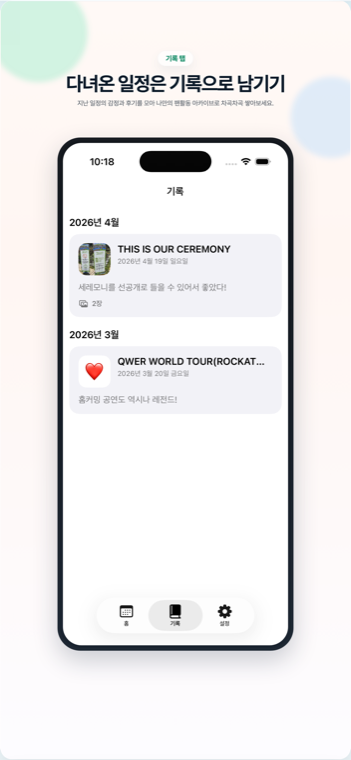
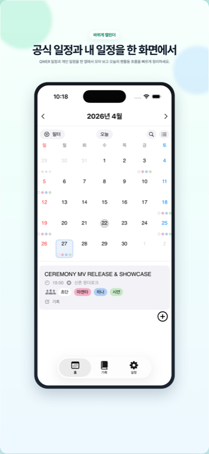
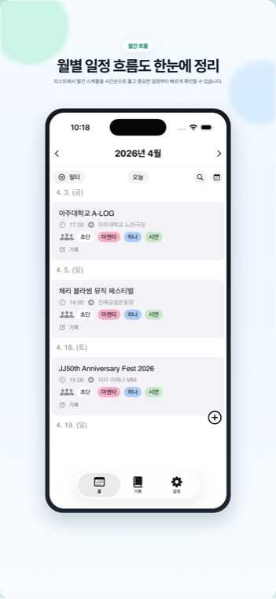
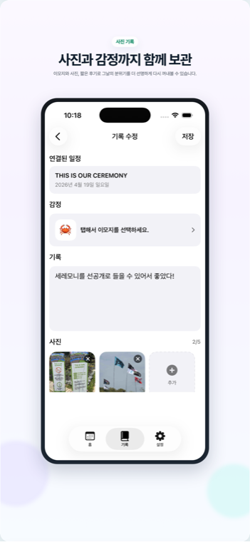
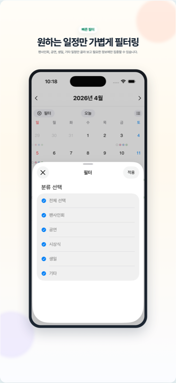
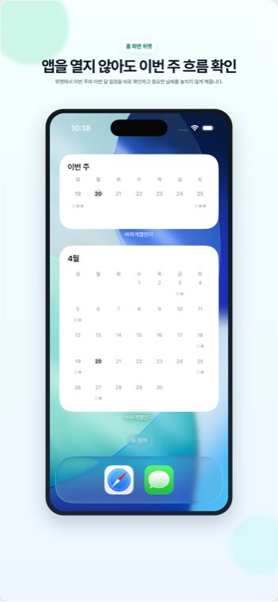

QWER 일정 확인
공연, 방송, 팬사인회, 유튜브, 생일 등 QWER 관련 일정을 캘린더와 리스트로 확인할 수 있어요.
RockCrabCalendar 2.0.0
공식 일정, 개인 일정, 일정별 알림, 그리고 다녀온 날의 감정과 사진 기록까지. 바위게캘린더는 팬활동의 흐름을 놓치지 않고 남기기 위한 캘린더 앱입니다.


Features
공연, 방송, 팬사인회, 유튜브, 생일 등 QWER 관련 일정을 캘린더와 리스트로 확인할 수 있어요.
일정마다 감정 이모지, 메모, 사진을 남겨 나만의 팬활동 아카이브로 보관할 수 있어요.
1시간 전, 30분 전, 10분 전, 5분 전 중 일정마다 원하는 알림 시간을 선택할 수 있어요.
리스트 화면에서 원하는 일정을 바로 검색하고, 필요한 정보에 더 빠르게 접근할 수 있어요.
Screenshots




For RockCrabs